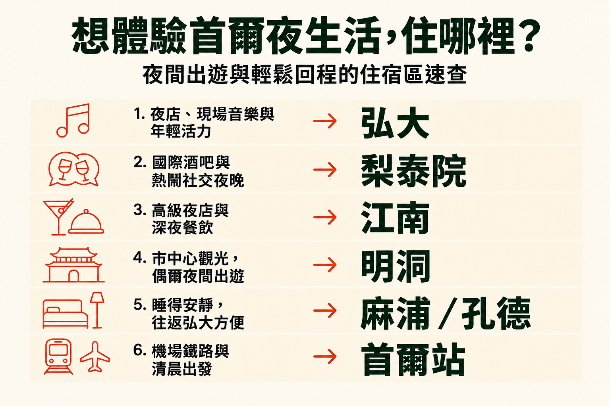

夜生活行程，哪裡最適合住宿？
多數晚上都有夜生活，又想讓酒吧、音樂、咖啡廳與宵夜靠近飯店，可以先從弘大考慮。國際酒館與社交夜晚適合梨泰院；漢江以南較精緻、預算較高的夜晚，適合江南。
夜生活只是旅行的一部分時，明洞、麻浦／孔德與首爾站更合理。這些區域犧牲飯店門口就有酒吧的便利，換來更容易觀光、較安靜的睡眠、機場移動或行李便利。
想讓晚餐、酒吧、音樂與宵夜都在同一街區延續，弘大最容易安排。梨泰院的夜晚更國際化；高級場所與漢江以南行程已是旅行主軸時，江南更合理。
夜生活不一定要在飯店正外面。白天觀光更重要，明洞很合適；安靜睡眠、機場交通或行李優先時，麻浦／孔德或首爾站更有吸引力。
實用的問題不只是首爾哪裡最晚睡，而是地鐵停駛、街道更忙、又想起隔天早上行程時，回飯店的路是否仍簡單。
多數晚上都有夜生活，又想讓酒吧、音樂、咖啡廳與宵夜靠近飯店，可以先從弘大考慮。國際酒館與社交夜晚適合梨泰院；漢江以南較精緻、預算較高的夜晚，適合江南。
夜生活只是旅行的一部分時，明洞、麻浦／孔德與首爾站更合理。這些區域犧牲飯店門口就有酒吧的便利，換來更容易觀光、較安靜的睡眠、機場移動或行李便利。

| 區域 | 適合情況 | 夜間氣氛 | 深夜回程 | 機場與行李 | 主要取捨 |
|---|---|---|---|---|---|
| 弘大 | 多數晚上都有夜生活 | 活躍、休閒 | 飯店近就容易 | 直達 AREX 普通列車 | 最繁忙街道附近較吵 |
| 梨泰院 | 重視國際酒館與社交夜晚 | 國際化、適合社交 | 住附近最方便 | 普通 | 較難兼顧首爾其他行程需求 |
| 江南 | 高級夜晚與首爾南部行程重疊 | 精緻都市感 | 飯店本來就在漢江以南最方便 | 較不直接 | 往歷史市中心交通較長 |
| 明洞 | 觀光比門外夜生活重要 | 繁忙，但非夜生活優先 | 通常需從夜生活區返回 | 整體可應付 | 晚間活動通常在別區 |
| 麻浦／孔德 | 前往弘大方便與安靜睡眠都重要 | 較安靜、有日常感 | 從西部夜生活區回來實用 | 從孔德直達 AREX 普通列車 | 飯店正外面的夜生活較少 |
| 首爾站 | 交通與行李比氣氛重要 | 有限 | 從市中心搭計程車回來還算方便 | 非常方便 | 飯店外夜生活很少 |

想讓街區本身持續成為晚間行程，弘大最合適。晚餐後能自然接喝一杯、現場音樂、夜店或宵夜，不必再穿越首爾，這也是它容易作為夜生活住宿區的原因之一。
最繁忙街道會活躍到深夜，但飯店不必直接在上方。離幾分鐘的住宿，仍能步行到同樣夜生活，夜晚最後一段卻明顯更平靜。
弘大入口站也有直達 AREX 普通列車，因此旅行同時有夜生活、機場日與行李，弘大仍實用。
閱讀弘大指南 →
想逛國際酒館、社交酒吧，而且認識人和找到特定夜店同樣重要，梨泰院很合適。訪客與餐廳組合，帶來有別於弘大年輕大學氣氛的節奏。
已有好幾晚在梨泰院，住這裡比只去一晚更實用。若多數白天行程在首爾其他地方，除了夜生活，也要有足夠理由把飯店訂在此。
地形也要留意。坡道與小支巷，可能讓深夜最後走回飯店的路，比一開始從地圖上看起來更長。
閱讀梨泰院指南 →
高級酒吧、夜店或晚餐，和漢江以南白天行程重疊時，江南最合理。這樣住附近，就不用深夜反覆穿越首爾。
其餘旅行若圍繞宮殿、明洞、仁寺洞或歷史市中心，就較沒理由以此作為夜生活住宿區。晚餐前覺得可接受的路程，到夜深可能就不那麼想走。
江南的夜生活通常也比弘大需要更高的消費預算，所以選擇不只關乎位置，也關乎晚上的風格。
閱讀江南指南 →
明洞不是首爾夜生活最強的街區，但白天更重視觀光、購物與輕鬆初訪時，仍可能是更好的住宿區。夜生活可以去別處，不必讓整段住宿跟著移動。
只預計一兩晚晚歸的旅客，特別適合這種方式。末班前搭地鐵，或更晚搭計程車回來，可能是為白天便利而合理接受的取捨。
每晚都想飯店外有酒吧夜店，弘大或梨泰院會更自然。
閱讀明洞指南 →
喜歡弘大夜生活，卻不想睡在旁邊，麻浦與孔德很實用。晚間街區較安靜，前往首爾西部與弘大仍不難。
孔德也有直達 AREX 普通列車，機場日與行李移動，比許多以夜生活為主的區域更簡單。
取捨是晚上通常先去別處。這是想方便前往夜生活，而不需要它就在飯店樓下的住宿區。
閱讀麻浦／孔德指南 →
首爾站是交通選擇，不是夜生活選擇。KTX、機場鐵路、大行李或一早離開，比深夜飯店外有酒吧咖啡廳更重要時，就合適。
仍可晚上去弘大、梨泰院或市中心，之後再回來，但飯店周邊不會有同樣的夜生活氣氛。
短旅行中，如果只有一次晚歸，而抵達、離開或後續移動更重要，這項取捨可能值得。
閱讀首爾站指南 →靠近夜生活，不必睡在它上方。離最繁忙地段幾分鐘，可能幾乎不影響晚間活動，房門關上後的夜晚卻差很多。
地鐵停駛後計程車很有用，但距離仍重要。深夜跨城，會改變費用，以及最後一個場所到飯店之間的時間。
夜生活街區看起來吸引人，直到國際飛行後要拖大行李穿過繁忙車站，感受才可能改變。即使因夜生活選區，機場交通與最後走到飯店的路仍重要。
夜生活風格與其餘行程本來都在漢江以南時，江南最合適。名氣本身，不會讓它成為首次首爾旅行最方便的住宿區。
明洞很多事都方便，但多數晚上計畫在別區酒吧夜店活動，久了可能會感受到反覆回程的負擔。
午夜覺得位置完美的飯店，隔天若要去宮殿、趕早班火車，或跨城接機場交通，就可能不那麼方便。
酒吧、音樂、宵夜與活躍晚間活動占多數夜晚時，弘大是各方面均衡、最容易安排的夜生活住宿區。國際社交夜生活適合梨泰院；漢江以南較高級的夜晚，則適合江南。
想要活躍社交夜晚，兩區都合適，但氣氛不同。弘大較休閒、偏年輕族群；梨泰院則有更國際化的酒館、酒吧與訪客組合。
希望晚間活動持續在飯店附近，弘大特別合適。稍遠離最繁忙夜生活街道，仍能保留方便，也更容易睡好。
高級夜生活與漢江以南的白天行程重疊時，江南最合理。第一次旅行以歷史首爾為主，反覆跨城可能讓別區更方便。
夜生活只是旅行的一部分時，明洞仍可以是很好的住宿區。比起飯店門外就有酒吧夜店，它更適合市中心觀光與購物。
地鐵不通宵，很晚的行程可能最後要搭計程車。因此午夜後，回飯店的實際距離比白天看起來更重要。
獨旅行程包含飯店附近的活躍夜晚，弘大最容易開始。喜歡國際酒館氣氛可選梨泰院；只要容易前往夜生活區、不必就在門外，麻浦或孔德更合適。
確切飯店街道，比只看區名更重要。在夜生活區，住得離最繁忙地段幾分鐘，通常仍方便，又不會讓最吵活動就在房間外。
沒有一個夜生活區是所有旅客都應避開的。常見問題是重視安靜卻選最繁忙街道、住得離最常去的夜生活太遠，或忘了考慮隔天早上位置是否合用。
通常不必。靠近夜生活，不代表要睡在它上方。離最繁忙街區幾分鐘，可能幾乎不影響晚間活動，等需要房間安靜時卻差很多。
夜生活占旅行重要部分，可以先從弘大考慮。國際社交夜晚更適合梨泰院；高級晚間活動與首爾南部行程已重疊，江南更有優勢。
明洞、麻浦／孔德與首爾站提醒我們：最熱鬧的夜生活街，不一定最適合睡覺。合適的住宿區，是讓晚上好玩、回程簡單，隔天首爾行程也仍容易抵達的地方。